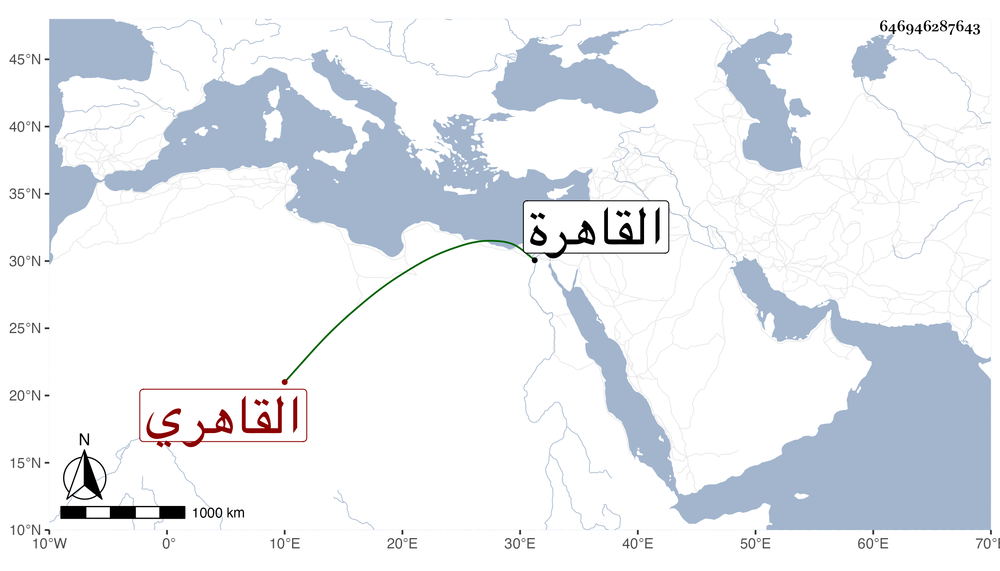

0902Sakhawi.DawLamic.ITO20230111-ara1.EIS1600.646946287643
Biography ID: 646946287643
23
محمد بن عبد الرحمن بن محمد بن علي بن محمد بن القسم بن صالح بن هاشم التاج بن الزين القاهري ، ويعرف كسلفه بابن العرياني . ولد قبل التسعين وسبعمائة بالقاهرة ونشأ بها وسمع على ابن الشيخة في سنة ثلاث وتسعين فما بعدها جزء الدراج ومستخرج أبي نعيم على مسلم بفوت يسير ، وحدث بالقليل سمع منه الفضلاء قرأت عليه . وكان خيرا يسقى الماء في بعض الحوانيت . مات في سنة تسع وستين رحمه الله .
